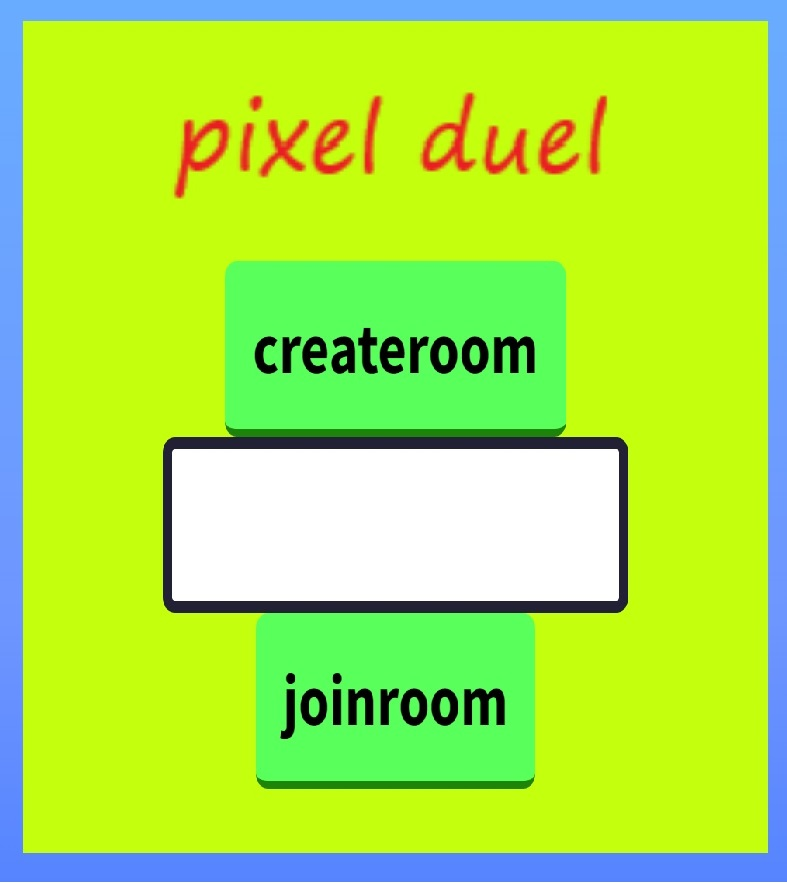
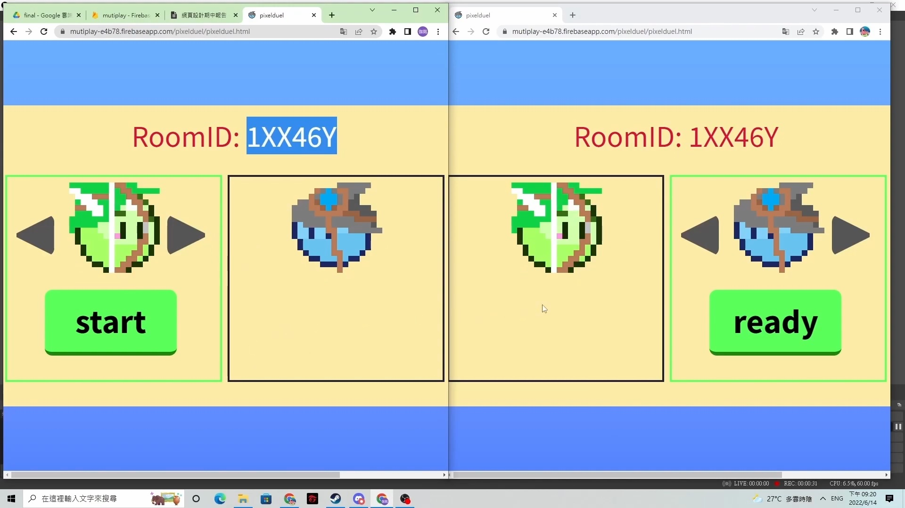
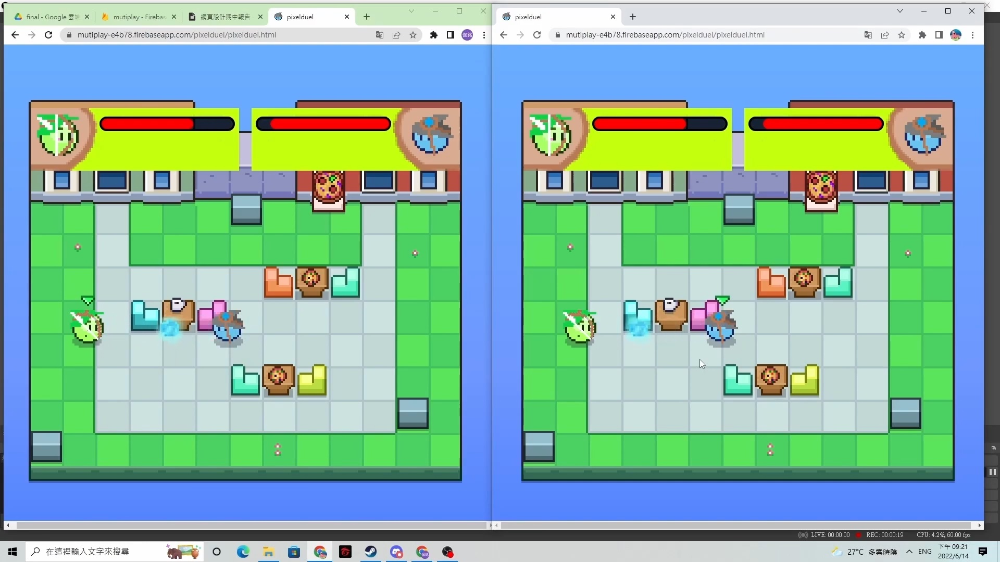
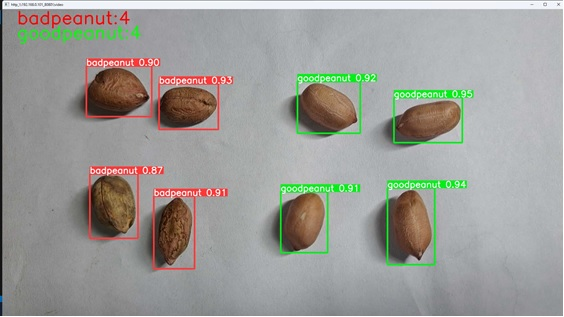
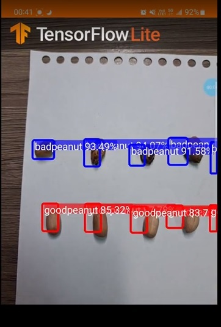
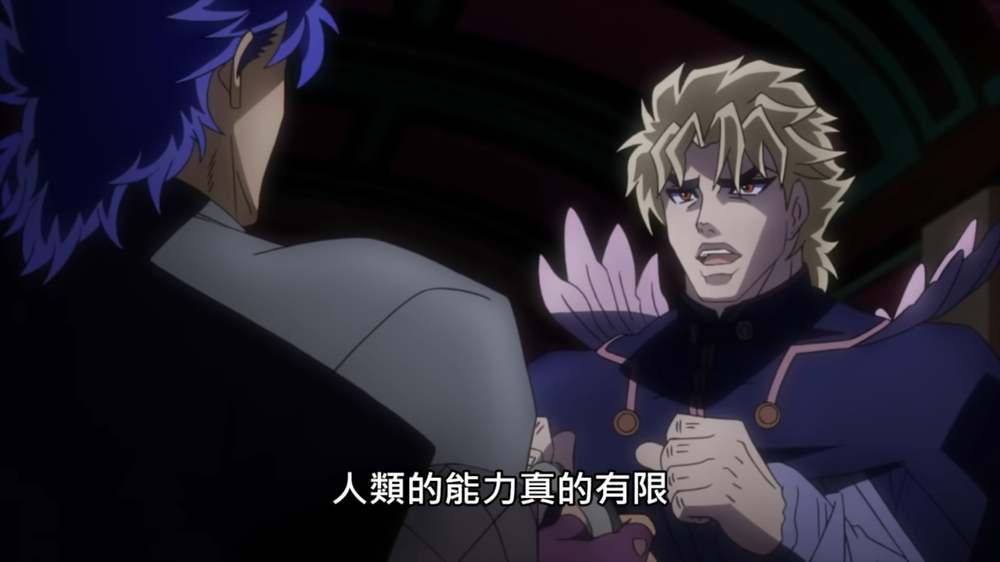
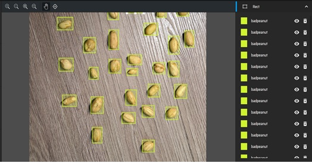
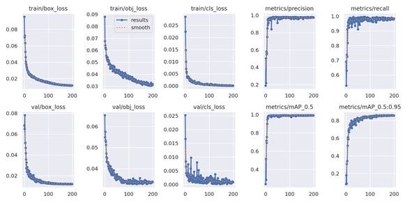
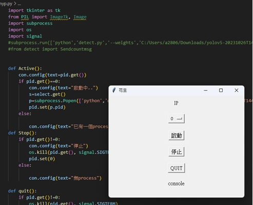

張伽銘
Yuntech CSIE
國立雲林科技大學 資訊工程系 大四
程式語言:c++、java、sql、php、python、android app、html、css、javascript、git
yolov5影像辨識模型
目前正在學習linux,ctf等資安相關技術
經歷&證照
高中:國立新竹高級工業職業學校 電機工程系
大學:國立雲林科技大學 資訊工程系
證照: 室內配線-丙級、工業電子-丙級、數位電子-乙級
大學程式能力檢定(CPE):2022-03-22(3題)
鈺博科技股份有限公司
大一暑假期間2021-08~2021-09在這間公司打工
鈺博科技公司主要在做電子元件代工組裝、元件焊接等
工作內容:協助流水線上組裝以及包裝、資料文件處理打印
龍喬泰塑膠工業股份有限公司（塑膠製品製造業）
大二暑假期間在這間公司打工2022-08~2022-09
龍喬泰公司主要在做塑膠粒子染色再重塑成新的染色塑膠粒子
工作內容:搬運塑膠粒子袋、倒入染色粉攪拌、倒入塑融機器製成，裝袋包裹、清洗鐵桶等

塔羅牌占卜
使用html、css、javascript所製作的塔羅牌占卜網站，從22張塔羅牌抽出4張，並且對四張牌的正逆位寓意解釋顯示在下方的格子
成品網站連結
hackmd紀錄

登入系統
串接firebase資料庫API所製作的簡易登入、註冊系統以及紀錄訊息功能youtubelink
像素對決(Pixel duel)
這是一個使用html、css、js以及串接firebase資料庫來實現的線上對戰小遊戲，在初始介面設置了創建房間以及加入房間的功能，創立房間完後可以選擇3個職業遊玩，加入方準備好之後房主就能倒數進行遊戲，當有一方HP歸0則結束遊戲跳出勝負字樣跳回主頁面。
成品網站連結
hackmd紀錄
影片介紹0 ~ 5:44
youtubelink
設計流程:遊戲開始後會loop檢查firebase上的資料是否更新，並且根據得到的資料渲染在html上，當輸入指令後資料會更新到firebase，再重新進入loop檢查渲染，當取得到的資料有一方HP為0後渲染出勝負字條跳回主頁。
  
基於影像辨識實做花生瑕疵檢測(大學畢業專題)
本研究將所有花生樣本拍攝完，使用Label工具將花生分為好花生與壞花生兩大類標籤，然後使用YOLOV5演算法訓練出高準確度的模型，再將手機鏡頭與電腦連接，提高辨識的運算效能。
研究流程:將花生樣本拍照取樣，使用makesense.ai這個網站將我們所拍攝的每顆花生標註上好花生或壞花生的label， label是物件在圖片上的座標是給yolo做深度學習的材料明確的標定物片才能讓機器學習的更加精確，透過YOLOV5演算法做深度學習訓練，最後丟入不在資料集全新的花生照片測試來檢驗實際的效果。
訓練，我們選擇的是在google colab上運行，在眾多模型中我們使用了yolov5l模型做訓練，在數據評斷下他是最適合我們使用的模型，

 在設計初期我們的想法是在手機上就能進行偵測，我們使用了tensorflowlite框架裝上我們的模型來使用，TensorFlow Lite 是一種行動裝置程式庫，用於在行動裝置、微控制器和其他邊緣裝置上部署模型。
而當我們實作出來後發現在手機上運行的效能不太理想，因為手機的效能是有極限的
一般而言使用預設啟動電腦鏡頭即可進行偵測，但由於筆電鏡頭所拍攝的畫面非常模糊以及各種使用上的不方便我們便另外尋找了利用外接設備來提升鏡頭的清晰度的方法，
我們最終使用了利用[IPwebcam]這款APP搭配上手機能夠自由的移動還有高解析度的攝像頭來當作我們的外接攝像頭，這款APP在PLAY商店上就可以下載並且只要與電腦處在同一個網段就能夠讀取到畫面，
我們還用python製作了一個簡易的開啟yolo偵測的activate_form。
  